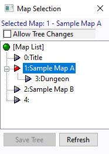
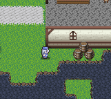
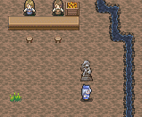
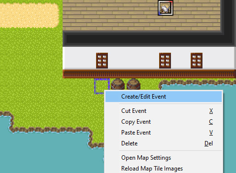
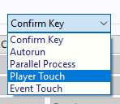
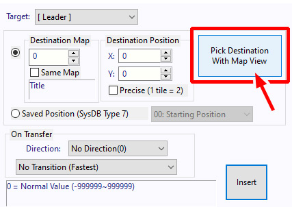
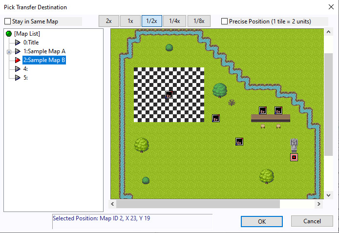
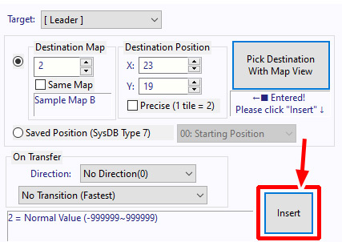
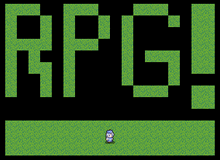

Open the Map Selection window by clicking the

[Goal]
Create an invisible event next to the barrel in Sample Map A
that transfers the player to Sample Map B when touched.
 When you walk next to the barrel on Sample Map A... |
→ |
 ...the player will be transferred to the area in front of the goddess statue on Sample Map B. |
| [1] Select the map Open the Map Selection window by clicking the |
 |
| [2] Switch the map layer Switch to the Event Layer Right-click the tile next to the barrel. A menu like the one on the right will appear. Click "Create/Edit Event". |
 |
| [3] Create a new event The Event Settings window will appear, as shown on the right. |
 |
| [4] Set the event trigger Set the Trigger of the event from "Confirm Key" to "Player Touch". |
 |
| [5] Open command window Click the button in the lower-right corner of the Event Window: "■ Open Command Window ■". Then look for the "Transfer" option on the left. |
 |
| [6] Open the map view A window like the one on the right will appear. Click "Pick Destination With Map View". |
 |
| [7] Pick transfer destination The "Pick Transfer Destination" window will appear. In the list on the left, select "2: Sample Map B" to switch to that map. On the map displayed on the right, click the tile in front of the goddess statue to place the red-and-white cursor. Click "OK" when done. ※ Note: You can scroll the map by holding the middle mouse button and dragging the map view. It's a very handy shortcut. |
 |
| [8] Double check the values You'll see that values have now been entered for the destination map and travel coordinates. Click "Insert" to add the event command. |
 |
| [9] Great work! When done, click "Save (Entire Map)" to save, then start a Test Play session. |
 |
| [10] Let's play test Start the game and walk toward the barrel to the right of the starting position. |
| [11] Transfer event is complete! After a brief pause, you'll be transported to the area in front of the goddess statue in Sample Map B! The two maps are now successfully connected! |
| [Extra Note] Using the same method described above, you can create a transfer event that moves the player from the barrel on "Sample Map A" to your "Test" map. However, if you only create an event that transfers the player from "Sample Map A" to the "Test" map, you won't be able to get back to "Sample Map A". You also need to create a return event from "Test" back to "Sample Map A". To solve this and properly connect two maps together, create two transfer events: one for teleporting somewhere and one for coming back. → Creating a new map ← Switching the map you’re editing |
↓  |